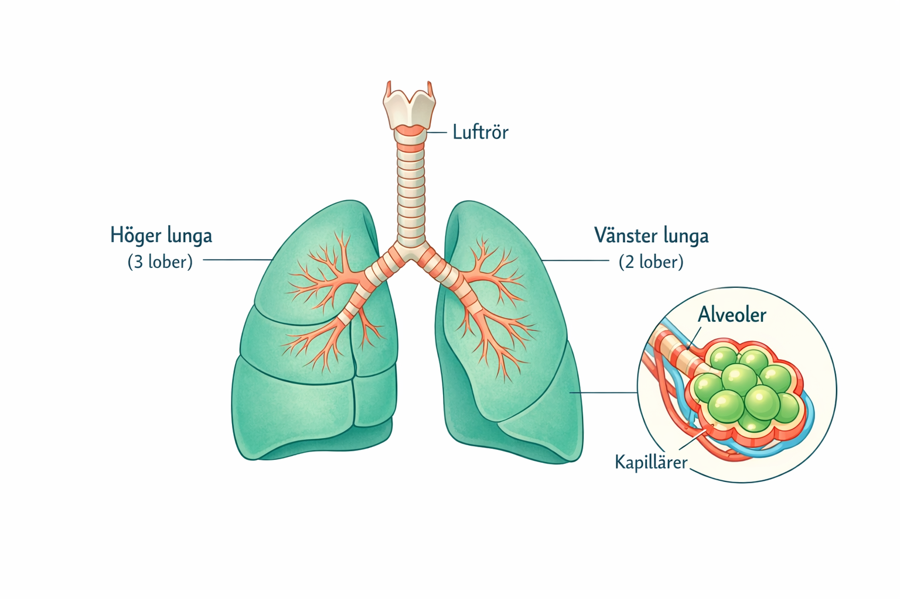
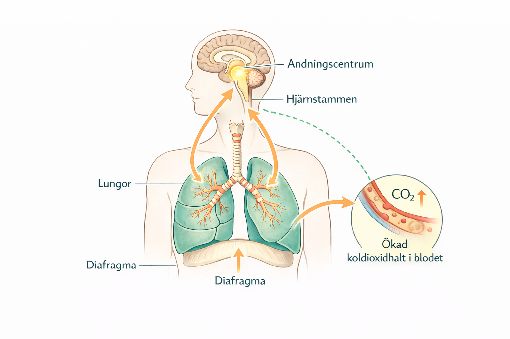

Introduktion
Andningssystemet – en översikt
Andningssystemet ser till att kroppens celler får tillgång till syre och att koldioxid förs bort. Det fungerar i nära samarbete med cirkulationssystemet och är avgörande för att cellandningen ska fungera.
🎯 Andningssystemets huvuduppgifter
- Transportera syre till blodet
- Avlägsna koldioxid från kroppen
- Anpassa andningen efter kroppens behov
- Skydda lungorna från partiklar och mikroorganismer
Andningssystemet delas in i övre och nedre luftvägar. De övre luftvägarna förbereder luften genom att värma, fukta och filtrera den, medan de nedre leder luften ner till lungorna där gasutbytet sker.
Struktur
Luftens väg genom kroppen
Inandningsluften följer en bestämd väg från omvärlden ner till lungornas djupaste delar. Längs denna väg passerar luften flera strukturer som tillsammans leder, skyddar och förbereder luften innan den når alveolerna. I alveolerna övergår luftens transport till gasutbyte med blodet, vilket illustreras i nästa bild.
Figur 1. Luftens väg från näshålan ner till lungblåsorna där gasutbytet sker.
🔑 Nyckelbegrepp – Luftvägarna
- Näshåla
- – värmer, fuktar och filtrerar inandningsluften.
- Svalg
- – gemensam passage för luft och föda.
- Struphuvudet
- – håller luftvägen öppen och skyddar vid sväljning.
- Luftstrupe
- – leder luften ner i bröstkorgen.
- Alveoler
- – lungblåsor där gasutbytet sker.
Organ
Lungornas uppbyggnad
Lungorna är mjuka, svampiga organ som ligger skyddade i bröstkorgen. Deras uppgift är att möjliggöra gasutbyte mellan luften och blodet.

Bild 1. Lungornas uppbyggnad. Höger lunga har tre lober och vänster lunga två lober. Luftrören förgrenas i lungorna och slutar i alveoler som omges av kapillärer.
Höger lunga är indelad i tre lober och vänster lunga i två lober. Varje lob försörjs av egna luftrör och blodkärl. Lungorna omges av en lungsäck med dubbla väggar, vilket minskar friktion när lungorna rör sig under andningen.
Inuti lungorna delar sig luftrören i allt tunnare grenar tills de slutar i miljontals små luftfyllda blåsor – alveolerna.
🔑 Nyckelbegrepp – Lungorna
- Lober
- – lungornas uppdelning i större avsnitt.
- Lungsäck
- – skyddande dubbel hinna runt varje lunga.
- Alveoler
- – små lungblåsor där gasutbytet sker.
- Kapillärer
- – kroppens minsta blodkärl som omger alveolerna.
Process
Gasutbyte i lungorna
Gasutbytet sker längst ut i luftvägarna, i alveolerna, där luften kommer i nära kontakt med blodet i kapillärerna.
Alveolernas väggar är extremt tunna och omges av ett tätt nätverk av kapillärer. Det gör att syre kan passera från luften in i blodet, samtidigt som koldioxid lämnar blodet och förs ut med utandningsluften.
När syrerikt blod transporteras vidare till kroppens vävnader sker ett liknande gasutbyte: syre tas upp av cellerna och koldioxid förs tillbaka till blodet.
🧭 Viktigt samband
Samma grundläggande process ligger bakom gasutbytet både i lungorna och ute i kroppens vävnader. Hur denna rörelse av gaser sker på molekylnivå behandlas i materialet om cellens funktioner.
Mekanik
In- och utandning
Andningen beror på aktiva rörelser i bröstkorgen som skapar tryckskillnader mellan lungorna och omgivande luft.
Figur 3. Skillnader mellan inandning och utandning. Det är tryckskillnader som driver luftflödet in och ut ur lungorna.
Vid inandning arbetar muskler aktivt. Mellangärdet (diafragma) dras nedåt och revbenen lyfts, vilket gör att bröstkorgens volym ökar. När volymen ökar minskar trycket i lungorna och luft strömmar in.
Vid utandning sker processen oftast passivt. Musklerna slappnar av, bröstkorgens volym minskar och lungvävnadens elasticitet pressar ut luften.
🔑 Nyckelbegrepp – Andningsrörelsen
- Diafragma
- – stor andningsmuskel som sänks vid inandning.
- Brösthålan
- – utrymmet där lungorna finns.
- Tryckskillnad
- – skillnad i lufttryck som gör att luft rör sig.
- Elastisk lungvävnad
- – gör att utandning oftast sker passivt.
Styrning
Hur andningen regleras
Andningen sker automatiskt, men kan även påverkas viljemässigt. Kroppen anpassar hela tiden andningen efter sitt behov.
Andningen styrs från andningscentrum i hjärnstammen, närmare bestämt i den förlängda märgen. Där registreras bland annat halten koldioxid i blodet.
Om koldioxidhalten ökar skickas signaler till andningsmusklerna som gör att andningen blir snabbare och djupare. På detta sätt regleras andningen automatiskt, utan att du behöver tänka på det.

Bild 2. Andningen regleras automatiskt från andningscentrum i hjärnstammen. Ökad koldioxidhalt i blodet stimulerar andningen genom signaler till andningsmusklerna.
Du kan även styra andningen med viljan – till exempel hålla andan – men bara under begränsad tid. Till slut tar den automatiska styrningen över.
🧠 Viktigt samband
Det är inte syrebrist utan ökad koldioxidhalt i blodet som är den viktigaste signalen som styr andningen.
Självbedömning
Kolla att du kan
Försök svara på frågorna utan att titta i texten. Visa sedan mallsvaren och bocka i om du hade med det viktigaste.